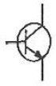
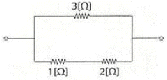
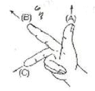
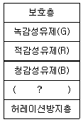
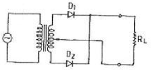
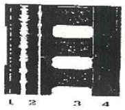

영사기능사 (2010-04-05 기출문제)
1과목: 전기일반
1. 극장용 사운드 포맷에 대한 설명으로 틀린 것은?
- 돌비 디지털은 5.1형식으로 되어 있다.
- DTS는 5.1형식으로 되어 있다.
- SDDS는 7.1형식으로 되어 있다.
- SNDS는 5.1형식으로 되어 있다.
(정답률: 알수없음)

2. 반도체에 대한 설명으로 옳은 것은?
- 절대온도 -273℃에서 절연체가 된다.
- 트랜지스터는 진성반도체이다.
- 정공이 생기게 하는 불순물은 도너(Doner)이다.
- 정(+)의 저항온도계수를 갖는다.
(정답률: 알수없음)
3. 인터미턴트 스프로켓(Intermittent Sprocket)은 1분에 360회전한다. 십자차의 캠축은 1분에 몇 회전하는가?
- 1,220
- 1.440
- 1,880
- 2,200
(정답률: 알수없음)
4. 35mm 필름 영사기의 사운드 헤드에 속하는 것은?
- 간헐 스프로켓
- 십자차(Maltese Cross)
- 플라이 휠(Fly Wheel)
- 램프 하우스
(정답률: 알수없음)
5. 스피커 특성에 대해 옳은 것은?
- 3-way 방식에서 중음용 스피커를 스쿼커(Squawker)라 한다.
- 트위터(Tweeter)는 저음용 스피커이다.
- 정전형(콘덴서) 스피커는 저음 전용이고, 직류 바이어스 전원이 필요하다.
- 동전형(다이나믹) 스피커 중 나팔형은 저역 특성이 좋다.
(정답률: 알수없음)
6. 5.1채널 음향 스피커의 구성요소가 아닌 것은?
- 센터 스피커
- 레프트 스피커
- 서라운드 스피커
- 리어 센터 스피커
(정답률: 알수없음)
7. SRD에 관한 설명 중 틀린 것은?
- 표본화 주파수는 192KHz이다.
- 디지털 녹음 부위는 필름의 퍼포레이션과 퍼포레이션 사이이다.
- 디지털 데이터 압축은 10:1에서 12:1이다.
- 돌비 연구소에 의해 개발되었다.
(정답률: 알수없음)
8. 렌즈를 통과하는 광선은 다음 세가지 성질이 있다. 틀린 것은?
- 초점을 통과하는 광선은 광축에 대각선을 이룬다.
- 광축에 평행한 광선은 초점을 통과한다.
- 초점을 퉁과하는 광선은 광축에 평행하게 된다.
- 렌즈의 중심을 통과하는 광선은 직진한다.
(정답률: 알수없음)
9. 거울에 빛을 비추었을 때 거울 면에 수직인 선과 들어오는 빛이 이루는 각을 무엇이라 하는가?
- 수평각
- 수직각
- 입사각
- 평면각
(정답률: 알수없음)
10. 단위가 바르게 짝 지어진 것은?
- 광속-cd(칸델라)
- 조도-cd/m2·nt(니트)
- 광도- lm(루멘)
- 휘도-cd/m2·nt(니트)
(정답률: 알수없음)
11. 영화관 음향의 B 체인 구성요소가 아닌 것은?
- 파워 앰프
- 스피커
- 영화관의 음향적인 공간 특성
- 아날로그와 디지털 사운드 헤드
(정답률: 알수없음)
12. 눈을 돋보기에 가까이 접근시켜 물체를 보았더니 5배의 허상이 나타났다. 명시거리가 25cm라면 이 돋보기의 초점거리는 약 몇 cm인가?
- 4
- 6
- 8
- 10
(정답률: 알수없음)
13. 하늘이 파랗게 보이는 것은 빛의 어떤 성질 때문인가?
- 반사
- 굴절
- 분산
- 산란
(정답률: 알수없음)
14. 곡률반경이 20cm인 볼록렌즈를 이용하여 물체와 같은 크기의 상을 만들려면 물체는 어느 위치에 놓아야 하는가?
- 렌즈 앞 10cm
- 렌즈 앞 20cm
- 렌즈 앞 40cm
- 렌즈 앞 50cm
(정답률: 알수없음)
15. 영사용 광원으로 사용되는 제논 램프의 전극 재료로 옳은 것은?
- 플레이트
- 그리드
- 캐소드
- 텅스텐
(정답률: 알수없음)
2과목: 렌즈 및 광원
16. 사람의 눈으로 볼 수 있는 빛을 무엇이라 부르는가?
- 자외선
- 적외선
- 가시광선
- X-선
(정답률: 알수없음)
17. 시네마스코프 영화를 상영하기 위해 사용되는 렌즈는?
- 아나모픽 렌즈
- 어안 렌즈
- 프린팅 렌즈
- 표준 렌즈
(정답률: 알수없음)
18. 그림의 트랜지스터 기호에서 화살표가 의미하는 것은?

- 켈렉터에서 다수캐리어의 진행방향을 의미
- 켈렉터에서 소수캐리어의 진행방향을 의미
- 이미터에서 전자의 진행방향을 의미
- 이미터에서 정공의 진행방향을 의미
(정답률: 알수없음)
19. 바이어스회로에 대한 설명으로 옳은 것은?
- 고정 비이어스-동작점이 온도변화에 매우 안정적
- 전압 되먹임 바이어스-온도 상승으로 인한 컬렉터의 전류감소를 보상하기 위한 회로
- 전류 되먹임 바이어스-컬렉터 바이어스
- 이미터 바이어스-온도 변화에 따른 안정을 위해 전류 되먹임
(정답률: 알수없음)
20. 트랜지스터가 증폭기로 동작하기 위해 바이어스가 어떻게 되어야 하는가?
- 이미터-베이스는 순방향, 베이스-컬렉터는 역방향
- 이미터-베이스는 역방향, 베이스-컬렉터는 순방향
- 이미터-베이스는 순방향, 베이스-컬렉터는 순방향
- 이미터-베이스는 역방향, 베이스-컬렉터는 역방향
(정답률: 알수없음)
21. 전선의 저항을 결정하는 요소가 아닌 것은?
- 길이
- 굵기
- 무게
- 온도
(정답률: 알수없음)
22. 1[V]와 같은 값은?
- 1[J/C]
- 1[Ω/m]
- 1[C/J]
- 1[Wb/m]
(정답률: 알수없음)
23. 저항 R=16[Ω], KL=12[Ω]. XC=24[Ω]이 직렬로 연결된 회로에 200[V]의 교류전압을 가할 때 소비전력은?
- 1.2[KW]
- 1.6[KW]
- 2[KW]
- 2.4[KW]
(정답률: 알수없음)
24. 저항의 역수는?
- 인덕턴스
- 컨덕턴스
- 리액턴스
- 서셉턴스
(정답률: 알수없음)
25. 출력 4[KW], 회전수 1,500[rpm]으로 회전하는 전동기의 토크[N·m]는?
- 10.42
- 19.48
- 20.12
- 25.48
(정답률: 알수없음)
26. 전류계의 측정 범위를 넓히기 위해 전류계와 병렬로 접속하는 저항기는?
- 분류기
- 배율기
- 변압기
- 변류기
(정답률: 알수없음)
27. 교류 파형이 1초 동안에 반복되는 사이클수를 나타내는 것은?
- 주기
- 회전수
- 주파수
- 각속도
(정답률: 알수없음)
28. 20[A]의 전류를 흘렸을 때 전력이 60[W]인 저항에 30[A]를 흘렸을 때의 전력은 몇 [W]인가?
- 10
- 90
- 120
- 135
(정답률: 알수없음)
29. 어떤 도체의 길이를 2배로 하고, 단면적을 1/2배로 했을 때의 저항은 원래 저항[R]의 몇 배가 되는가? (단, 도체의 체적은 일정하다.)
- 2배
- 3배
- 4배
- 8배
(정답률: 알수없음)
30. FET(Field Effect Transistor)특성에서 게이트 전압이 어느 값에 이르면 전류(ld)가 거의 흐르지 않는다. 이 때의 전압을 무엇이라 하는가?
- 핀치오프전압
- 포화전압
- 이상전압
- 정전압
(정답률: 알수없음)
3과목: 증폭기 및 녹음재생
31. 그림에서 합성 저항은 몇 [Ω]인가?

- 1.5
- 2.5
- 0.833
- 0.003
(정답률: 알수없음)
32. 그림은 플레밍 오른손 법칙을 나타낸 것이다. (A), (B), (C)가 가르키는 것은?

- 자속-운동-기전력
- 운동-기전력-자속
- 운동-자속-기전력
- 자속-기전력-운동
(정답률: 알수없음)
33. 넓은 스크린을 통해 영화를 상영하기 위해 개발된 영사방식으로 3기의 영사기를 동조시켜 영화를 상영하는 방식을 무엇이라 하는가?
- 비스타비전
- 시네라마
- 시네마스코프
- 입체영화
(정답률: 알수없음)
34. 눈의 구조 및 기능에 대한 설명으로 틀린 것은?
- 수정체는 카메라의 렌즈와 같은 기능을 한다.
- 수정체의 두께는 모양체에 의해 변한다.
- 홍체는 카메라의 조리개와 같은 기능을 한다.
- 망막은 카메라의 셔터와 같은 기능을 한다.
(정답률: 알수없음)
35. 램프하우스의 작동이 시작되었을 때 영사기의 안전과 관련하여 꼭 확인하여야 하는 사항은?
- 마스크의 형태
- 게이트판의 밀착여부
- 송풍장치의 작동 여부
- 말티즈 크로스의 조임 여부
(정답률: 알수없음)
36. 영화 상영 중 화면에 플리커(Flicker)가 생기면 가장 먼저 점검할 사항은?
- 정속 스프로켓
- 단속 스프로켓
- 가이드 롤러
- 셔터
(정답률: 알수없음)
37. 사운드헤드에서 주로 사용되며 필름을 팽팽하게 장력을 주는 것은?
- 텐션 롤러
- 가이드 롤러
- 스프로켓 롤러
- 스프로켓 슈우
(정답률: 알수없음)
38. 영사용 제논램프(Xenon Lamp)의 점화방식은?
- 양극과 음극의 두 전극의 충돌에 의한 점화
- 고주파 펄스전압을 이용한 점화
- 열음극에서 열전자 방출에 의한 점화
- 적외선에 의한 가열 점화
(정답률: 알수없음)
39. DLP에 대한 설명으로 틀린 것은?
- Digital Lighting Processing 의 약자
- 미국 텍사스 인스트루먼트사에 의해 개발
- 1개의 DMD에는 1024개의 독립된 미러(Mirror)가 있다.
- 램프의 빛을 DMD의 미러에 반사시켜 렌즈로 투영하는 구조
(정답률: 알수없음)
40. 35mm필름(컬러포지티브)의 구조를 나타낸 것이다. 빈칸에 들어갈 말은 무엇인가?

- 흑강섬유제(Black)
- 황강섬유제(Y)
- 베이스(Base)
- 황색 필터층
(정답률: 알수없음)
41. 영사기의 아파추어에서 필름이 한 화면에서 다음 화면으로 이동할 때 스크린에 투사되는 광선을 막아주는 장치는?
- 상부 스프로켓
- 셔터
- 렌즈
- 인터 스프로켓
(정답률: 알수없음)
42. 영사 렌즈에 크라운유리의 볼록렌즈와 프린트유리의 오목렌즈를 조합하여 사용하는 이유는?
- 색수차를 줄이기 위해
- 투과율을 좋게 하기 위해
- 구면수차를 줄이기 위해
- 밝기 조절을 하기 위해
(정답률: 알수없음)
43. 인간의 눈에서 망막 주변부에 집중해서 분포되어 명암을 감지하는 곳은?
- 간상체
- 추상체
- 수정체
- 시신경
(정답률: 알수없음)
44. 1853년 독일의 자이델 연구소에서 발표한 렌즈의 왜곡과 관련 자이델 5 수차가 아닌 것은?
- 구면수차
- 환원수차
- 비점수차
- 상면만곡
(정답률: 알수없음)
45. 필름의 영상을 텔레비전 신호로 변환하는 특수 영사기는?
- 영상해석용 영사기
- 텔레시네 영사기
- 리플렉스 변환기
- 옵티컬 영사기
(정답률: 알수없음)
4과목: 영사기와 필름의 구조원리
46. 일반적으로 인간의 눈은 수평각으로 한 쪽 눈이 90도, 양쪽 눈은 160에서 200도 범위이다. 세밀하게 관찰할 수 있는 인간의 시각도 범위는?
- 5도 정도
- 20도 정도
- 45도 정도
- 90도 정도
(정답률: 알수없음)
47. 영사 스크린의 조건으로 틀린 것은?
- 연색성이 좋을 것
- 반사율이 높을 것
- 휘도가 적정할 것
- 지향성이 없을 것
(정답률: 알수없음)
48. 집광렌즈에 대한 설명으로 틀린 것은?
- 렌즈의 구면수차를 줄이기 위해 보통 쌍으로 만든다.
- 콘덴서 렌즈라고도 한다.
- 집광을 하기 위한 볼록렌즈이다.
- 오목렌즈를 겹친 것을 말한다.
(정답률: 알수없음)
49. 레코드 플레이어와 스피커의 위치가 근접해 있을 때, 스피커의 음량을 올리면 연속음이 생겨 그치지 않는 경우가 있다. 이와 같은 현상을 무엇이라 하는가?
- 와우(wow)
- 플래터(flatter)
- 하울링(howling)
- 믹싱(mixing)
(정답률: 알수없음)
50. 폴리에틸렌, 텔레프탈레이트, 폴리에스터 등 에스터 베이스라 불리는 불연성 필름의 장점이 아닌 것은?
- 아세톤 등 필름 시멘트로 쉽게 접착된다.
- 화학적으로 안정하다.
- 내구성이 강하다.
- 유연성이 좋다.
(정답률: 알수없음)
51. 영사기에 쓰이는 전동기의 극수가 4극이고 정격 전압이 220V, 60Hz로 1분간 회전한다면 동기 회전수(rpm)는 얼마인가?
- 1,440
- 1,800
- 3,300
- 132,000
(정답률: 알수없음)
52. 영사기는 초당 24프레임을 영사한다. TV(NTSC)의 전자영상 프레임은?
- 25프레임
- 30프레임
- 35프레임
- 40프레임
(정답률: 알수없음)
53. 간헐운동 장치에 대한 설명으로 가장 적절한 것은?
- 시각의 잔상효과를 이용하여 연속된 화면을 볼 수 있게 한 장치
- 영사창과 렌즈의 거리를 조절하는 장치
- 소리를 선명하게 듣기 위한 장치
- 광원에서 나오는 빛을 단속시키는 장치
(정답률: 알수없음)
54. 35mm 영사용 필름이 끊어졌을 때 잇는 기구는?
- 스프로켓(Sprocket)
- 스플라이서(Splicer)
- 거버너(Governor)
- 플레터(Platter)
(정답률: 알수없음)
55. 디지털시네마의 암호화 파일의 재생을 위해서는 인증된 서버 외에는 콘텐츠 상영이 불가능하다. 영사기사는 사전에 업로드하고 콘덴츠 재생을 위한 무엇이 필요한가?
- 포렌식 워터마킹(Forensic Watermarking)
- KDM(Key Delivery Message)
- 링크 인크립션(Rink Encryption)
- 콘덴츠 무결성 검사(Contents Integrit)
(정답률: 알수없음)
56. 다음과 같은 회로의 기능은?

- 증폭
- 발진
- 정류
- 중화
(정답률: 알수없음)
57. 다음 필름에서 부여한 번호에 대한 설명으로 틀린 것은?

- 1은 DTS 타임코드
- 2는 아날로그 옵티컬사운드
- 3은 돌비 디지털
- 4는 CDS
(정답률: 알수없음)
58. 진동체의 주파수가 600[Hz]이고, 대기온도가 20℃일 때 음파의 파장은 몇 [cm]인가?
- 52.25
- 55.00
- 57.25
- 58.00
(정답률: 알수없음)
59. 원자의 구조에서 가전자에 대한 설명으로 옳은 것은?
- 원자핵에서 가장 가까운 궤도에 존재
- 원자핵에서 가장 먼 궤도에 존재
- 원자핵의 여러 궤도에 존재
- 원자핵의 궤도와 무관
(정답률: 알수없음)
60. 일반적으로 음속이 가장 빠른 계절은?
- 봄
- 여름
- 가을
- 겨울
(정답률: 알수없음)